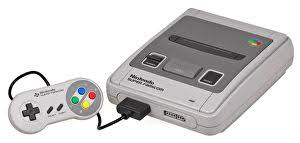
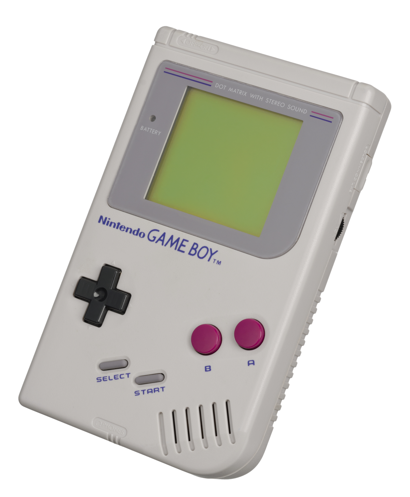
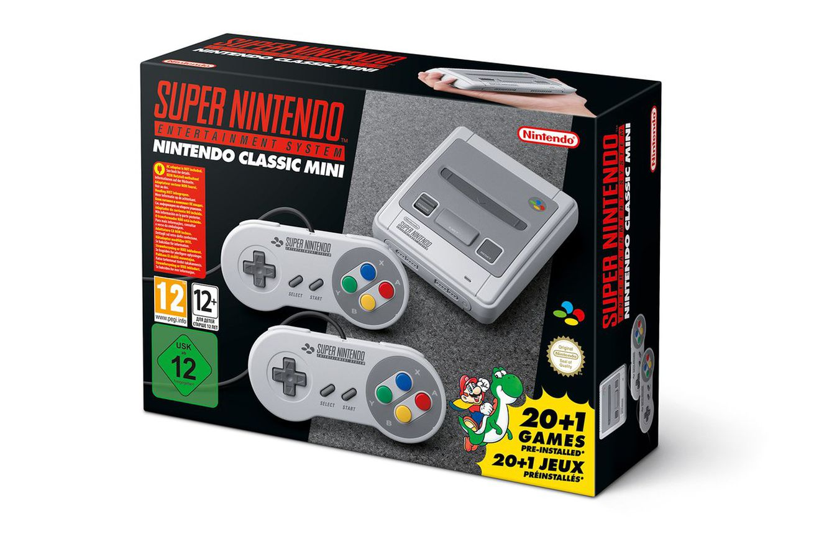
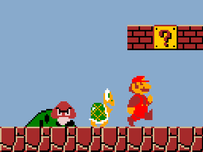

The first Nintendo's console was named as NES "Nintendo Entertaining System" and it was launched at 1983.

The second Nintendo Consoles was launched at 1990, known as SNES "Super Nintendo Entertaing System"
|
Before the SNES being launched the first important Nintedo Handheld consoles was released in 1989.  |
Currently there's a remastered version of this console being sold. There's a link in order to buy the console. |
THE END
